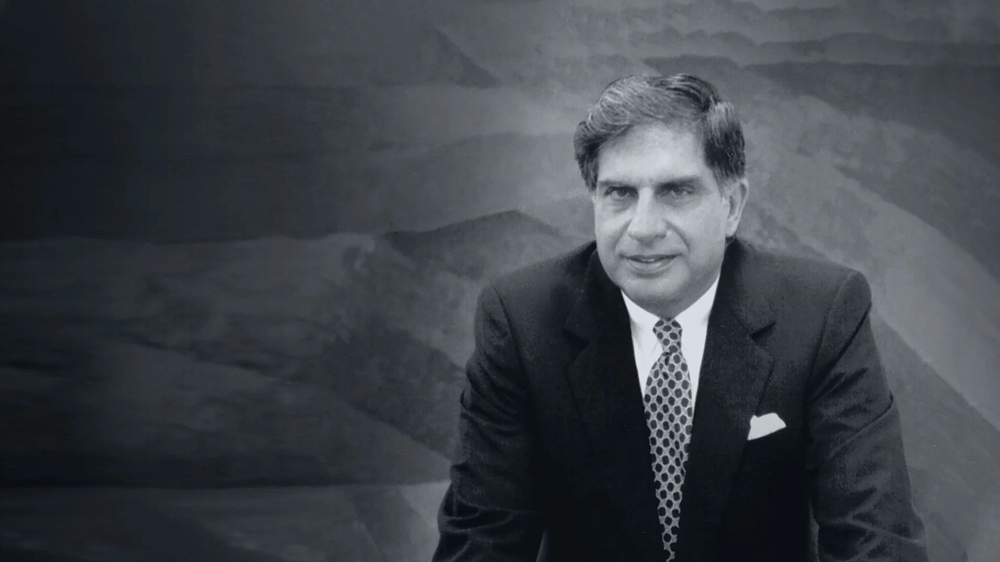

Ratan Tata is one of the most influential business magnate India has ever seen.
"None can destroy iron, but its rust can. Likewise, none can destroy a person, but his own mindset can."
Ratan Naval Tata (born 28 December 1937) is an Indian businessman and former chairman of Tata Sons. He was also the chairman of the Tata Group from 1990 to 2012, serving also as interim chairman from October 2016 through February 2017. He continues to head its charitable trusts. In 2008, he received the Padma Vibhushan, the second highest civilian honour in India, after receiving the Padma Bhushan, the third highest civilian honour in 2000. He is the son of Naval Tata, who was adopted by Ratanji Tata, son of Jamsetji Tata, the founder of the Tata Group. He graduated from the Cornell University College of Architecture with a bachelor's degree in architecture. He joined Tata in 1961, where he worked on the shop floor of Tata Steel. He later succeeded J. R. D. Tata's as chairman of Tata Sons upon the latter's retirement in 1991. Under his tenure the Tata Group acquired Tetley, Jaguar Land Rover, and Corus, in an attempt to turn Tata from a largely India-centric group into a global business. Tata is also one of the largest philanthropists in the world, having donated around 60–65% of his income to charity.
Ratan Tata was born in Bombay, now Mumbai, during the British Raj, on 28 December 1937. He is the son of Naval Tata, who was born in Surat and later adopted into the Tata family, and Sooni Tata, the niece of Tata group founder Jamsetji Tata. Tata's biological grandfather, Hormusji Tata, was a member of the Tata family by blood. In 1948, when Tata was 10, his parents separated, and he was subsequently raised and adopted by Navajbai Tata, his grandmother and widow of Ratanji Tata. He has a younger brother Jimmy Tata and a half-brother, Noel Tata, from Naval Tata's second marriage with Simone Tata, with whom he was raised. His first language is Gujarati.
In the 1970s, Tata was given a managerial position in the Tata group. He achieved initial success by turning the subsidiary National Radio and Electronics (NELCO) around, only to see it collapse during an economic slowdown. In 1991, J. R. D. Tata stepped down as chairman of Tata Sons, naming him his successor. Initially, Tata faced stiff resistance from the heads of various subsidiaries, who had a large amount of operational freedom under the senior Tata's tenure. In response, Tata implemented a number of policies designed to consolidate power, including the implementation of a retirement age, having subsidiaries report directly to the group office, and requiring subsidiaries to contribute their profit to building the Tata group brand. Tata prioritised innovation and delegated many responsibilities to younger talent. Under his leadership, overlapping operations between subsidiaries were streamlined into company-wide operations, with the group exiting unrelated businesses to take on globalisation
Ratan Tata received the Padma Bhushan in 2000 and Padma Vibhushan in 2008, the third and second highest civilian honours awarded by the Government of India.Along with national civilian honours, Tata has also received various state civilian honours like 'Maharashtra Bhushan' in 2006 for his huge work in the public administration in Maharashtra and 'Assam Baibhav' in 2021 for his exceptional contribution towards furthering cancer care in Assam.